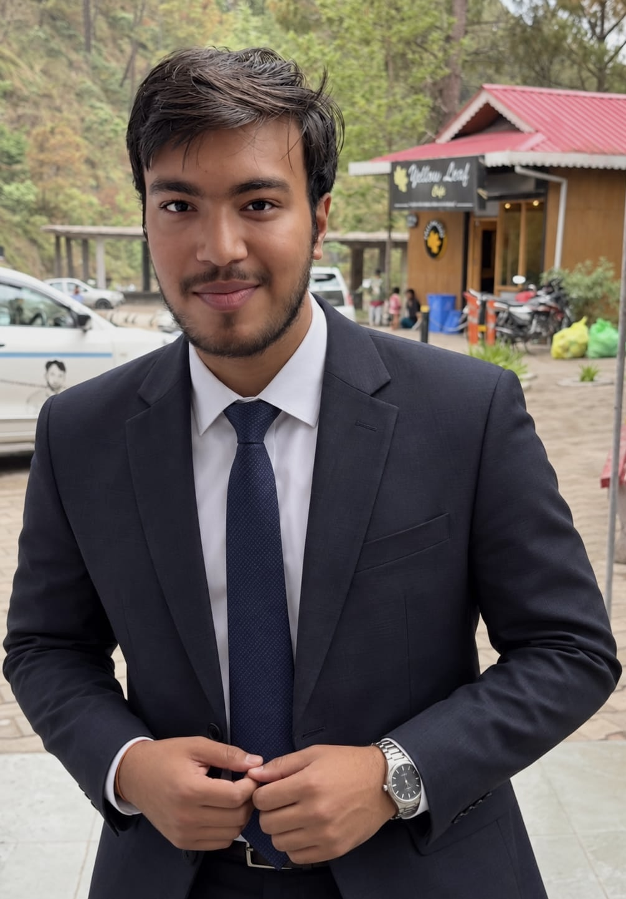

Notice
Start with a real question, a pattern or an everyday point of friction.

FOUNDER, TESSWORKS
I'm Harshit Agarwal, founder of TessWorks. My interests have always centred around exploring ideas, understanding complex systems and finding opportunities to build something meaningful. Over time, this curiosity has developed into a broader pursuit across software, artificial intelligence, intelligent automation, financial technology and blockchain.
TessWorks is the result of that pursuit — an independent venture focused on experimenting, developing and bringing ambitious ideas closer to reality.
My approach is hands-on: understanding a problem, exploring possible solutions and developing ideas through experimentation and continuous improvement. I'm particularly interested in products that combine thoughtful engineering with practical value.
Explore selected work ↗Start with a real question, a pattern or an everyday point of friction.
Look across disciplines and test what technology can make possible.
Shape the strongest ideas into software people can actually use.
Exploring intelligent systems, workflow automation and software that can make everyday processes more efficient, adaptive and capable.
Developing an interest in systematic market analysis, algorithmic strategies, backtesting and the engineering behind data-driven financial systems.
Exploring decentralised architectures, blockchain applications and the possibilities of building more transparent, programmable digital ecosystems.
Bringing ideas into structured digital experiences through product development, experimentation and thoughtful engineering.
OPEN TO GOOD CONVERSATIONS